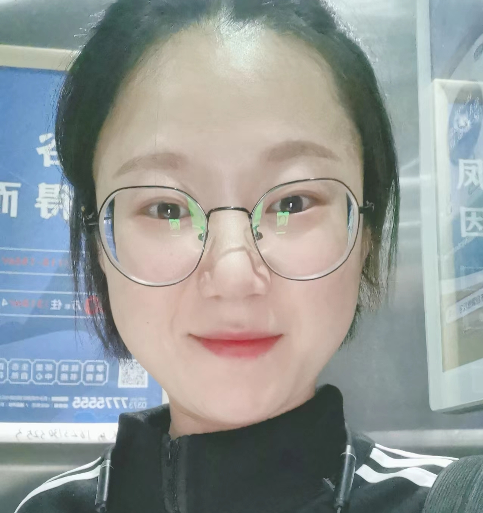
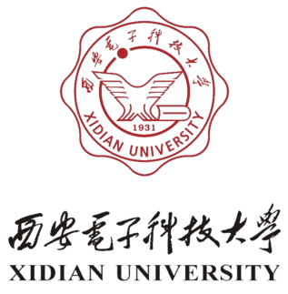

Ming Li （李茗😊）
Currently working toward Ph.D. And a member of Ubiquitous Networking and Intelligent Computing Lab (UNIC).
Biography
Ming Li received the M.E. degree in Computer Science and Technology from Henan Normal University, Xinxiang, China, in 2024 (supervised by Prof. Peiyan Yuan). She worked at Hyperfusion Digital Co., Ltd. & Zhengzhou College of Finance and Economics from August 2024 to June 2025. Currently, she is pursuing the Ph.D. degree in Information and Communication Engineering at Xidian University, Xi’an, China, under the supervision of Prof. Nan Cheng, and is a member of the Ubiquitous Networking and Intelligent Computing Lab (UNIC).
Her main research interests include:
1. Generative AI (focus on signal processing and practical applications);
2. Decision-making AI (Lyapunov-based Deep Reinforcement Learning for Resource Allocation of Adaptive Communication Scenarios( • - • )
|つ 🚗,🛰️,✈️,📶......);
3. Development of AI-driven plugin systems for intelligent communication systems (multi-agent resource scheduling, network resource management, and self-optimization).
My skills
Programming Language: C, Java, Matlab, Python, PHP, MySQL, GO, GUN/Linux, H5, C3, JS, JQuery.
Hobby: The development of Web and APP & Cluster construction.
Experience
Honors